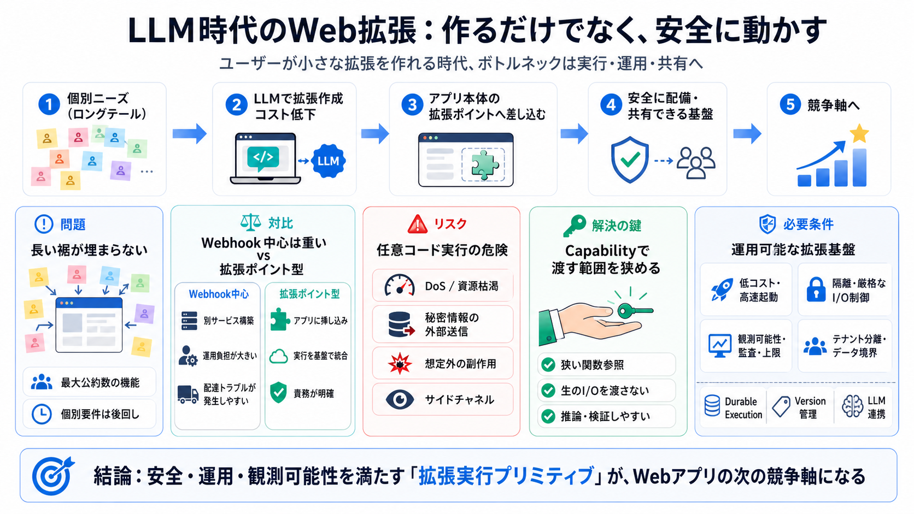

cover
02 / 16
拡張を安全に増やす
Web上の
Extensible
Software
LLM時代に「ユーザーが拡張を作れる」だけでは足りず、
安全に配備・共有できるWeb基盤
が要る、という問題意識を整理します。
problem
03 / 16
長い裾が埋まらない
個別ニーズは後回し
既存のWebアプリは「最大公約数」に寄りがちで、開発者の時間・注意が限られるため 個々の“ロングテール”要件を満たしにくいです（result: 満たされない需要が広がる）。
metaphor
04 / 16
書くのは安くなる
LLMで“作成コスト”が激減
LLM支援で、ユーザーが小さなコード（拡張）を作るコストが大きく下がります。 ただし課題は「動かす・配る・安全に共有する」側に移ります（次がボトルネック）。
architecture
05 / 16
本体に差し込む
拡張ポイントへ挿し込む
目指すのは、Webhookのように別サービスを立てるのではなく、 アプリのコアに対して「欠けた部分」を拡張として差し込むモデルです。
comparison
06 / 16
Webhookは重い
体験の差が致命的
「タグで実行」「cronで定期処理」など自然な要求に対して、Webhookは作る・運用する・配達トラブル解決の負担が増えがちです。
Webhook中心
別サービスを構築・運用 配達の不確実性処理が必要
拡張ポイント型
アプリ側に挿し込み 実行と責務を基盤側で統合
enumeration
07 / 16
危険は多面
任意コード実行の脅威
DoS、秘密情報の外部送信、無限ループ、サイドチャネルなど、任意コードのリスクは技術と運用の両方にまたがります。
Availability
無限ループ／資源枯渇（DoS）
Confidentiality
秘密情報の外部送信
Integrity
想定外の副作用
Side-channels
Spectre系の推測（例）
distinction
08 / 16
鍵は能力ベース
Capabilityで“渡す範囲”を狭める
任意コードに広い権限（生のI/OやAPIキー）を渡して後からプロキシで制御するのは抜けが出やすいです。
能力ベース（狭い関数参照）
で、推論と検証をしやすくします。
evidence
09 / 16
歴史の答え
Salesforceの成功
Salesforceは多テナントで「安全にカスタム実行」を提供してきました。 これは現代のサーバレス等と再解釈できる“要件のヒント”になります。
共通の着眼点：
隔離
・
実行
・
イベント連携
を、プラットフォーム側で担う。
architecture
10 / 16
実行だけでは終わらない
拡張を“運用可能”にする
Dynamic Workersのような考え方は、単なる実行環境ではなく
観測可能性・データ分離・耐久実行・バージョン管理
など運用機能を含みます。
Observability
OpenTelemetry等
Durability
Durable Execution
Governance
ソース管理・版管理
process
11 / 16
要件を満たす設計
必要条件のセット
安価で高速に起動でき、隔離され、能力ベースI/Oを提供し、監査できることが“拡張増殖”の出発点です。
Cost / Speed
低コスト コールドスタート高速
Security / Isolation
隔離 厳格なI/O制御
Audit / Limits
観測可能性 リソース上限
Data Boundaries
テナント分離 データアクセス管理
evidence
12 / 16
LLM連携も前提
拡張はLLMと組み合わさる
生成支援（LLM）で拡張が増えるなら、実行側（ホステッドLLMや連携）も含めて設計する必要があります。 「書く→動かす」までを同じ基盤で完結させます。
comparison
13 / 16
“全部解決”ではない
境界全体は別途設計
Dynamic Workers等を採用しても、UI側サンドボックス、ガイド、監査体制、コスト最適化などは別問題として残ります。 つまり「一気に解決」は誤解になり得ます。
未解決になりやすい
UI側サンドボックス 仕様設計（能力粒度・ライフサイクル）
追加で要る
拡張の更新・失効 責任分界とガバナンス
closing
14 / 16
地図になる
結論：拡張可能基盤が競争軸
著者の提案は「安全・運用・観測可能性を満たした拡張の増殖」を要件化し、LLM時代の現実的なプロダクト設計へ接続します。 特に“拡張を安全に増やす実行プリミティブ”が、Webアプリの次の競争軸になり得ます。
references
15 / 16
参考（概念）
References
本稿要約の背景として参照されることが多い要素（例）です。
Dynamic Workers（拡張可能な実行プリミティブ）
隔離 / 制限 / 観測可能性 / Durable Execution の文脈
Object Capability / Capability-based security（能力ベース）
権限の“渡し方”を狭めて検証可能性を上げる
OpenTelemetry（観測可能性）
拡張実行のトレーシング・監査に関わる概念
Salesforce（安全なカスタム実行の歴史的モデル）
多テナントでのプログラマブル基盤
REFERENCES
16 / 16
References
No references found